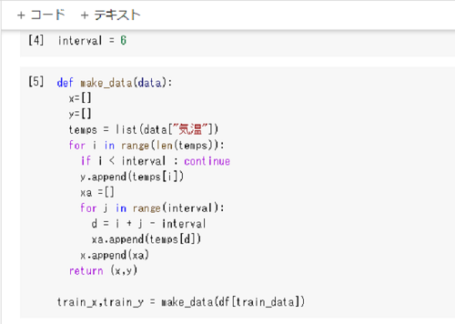
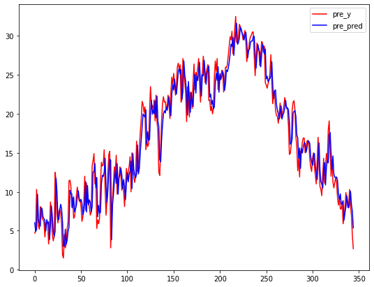

回帰分析による気温の予測
機械学習を身に着けるため翌日の平均気温を予測するプログラムを組みました。
気象庁のホームページから埼玉の平均気温2009年1月1日～2020年12月16日分のデータをダウンロードし、
重回帰分析の線形回帰モデルから2020年12月17日現在の平均気温を予測しました。
開発環境はGoogle Colaboratoryを利用しました。

2009年～2019年までの10年分のデータを学習用のデータとし、2020年分のデータを予測に使うデータとしました。
当日の前6日のデータから予測するため、学習用のデータをデータを振り分けました。
train_xが前6日分の平均気温、train_yが実際の当日の平均気温です。
学習させた回帰モデルの評価が上記です。[7]で出力させた値が切片、6日分各々の偏回帰係数です。
これらの値を予測用に振り分けたデータに適用させ予測した結果が下記になりました。
予測の結果17日の平均気温は 4.096398502291881度 となりました。
翌日実際の平均気温がいくつであったか確認すると 3.0度 でした。

回帰モデルと予測用の実際の気温のグラフ
回帰モデルと学習データを可視化したものが上記です。赤色のグラフが実際の気温で青色のグラフが回帰モデルのデータです。
右端の直近の部分は急激に冷え込んできていたこともあり乖離が大きように見えますが、全体として大きく乖離しているようではありません。